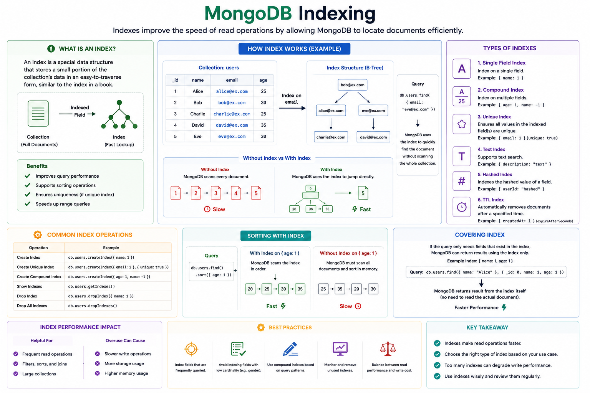

How indexes speed up queries, the different index types, the commands to create and inspect them, and how to check whether a query is actually using one.

An index is a special data structure that stores a small, sorted portion of a collection's data, allowing MongoDB to quickly locate documents without scanning every single one.
Without an index, MongoDB has to perform a collection scan — reading every document to find matches. With the right index, it can jump directly to the relevant documents, similar to using the index at the back of a book instead of reading every page.
unique enforces no duplicate values, partial only indexes documents matching a filter, and TTL automatically deletes documents after a set time.db.users.createIndex({ email: 1 })Creates an ascending index on email. Use -1 for descending.
db.orders.createIndex({ userId: 1, createdAt: -1 })Speeds up queries that filter on userId alone, or on userId + createdAt together, thanks to the prefix rule.
db.users.createIndex(
{ email: 1 },
{ unique: true }
)Rejects any insert or update that would create a duplicate email value.
db.orders.createIndex(
{ status: 1 },
{ partialFilterExpression: { status: "pending" } }
)Only indexes documents where status: "pending", keeping the index small when most documents don't match.
db.sessions.createIndex(
{ createdAt: 1 },
{ expireAfterSeconds: 3600 }
)Automatically deletes documents 1 hour after createdAt — great for sessions, logs, or temporary tokens.
db.articles.createIndex({ title: "text", body: "text" })
// query it with
db.articles.find({ $text: { $search: "mongodb indexing" } })db.places.createIndex({ location: "2dsphere" })This is the part interviewers love to probe: knowing an index exists isn't enough — you need to prove a specific query is actually using it.
db.users.getIndexes()Returns every index defined on the collection, including the default _id index.
db.users.find({ email: "a@x.com" }).explain("executionStats")This is the command for checking whether a query is scanning the collection or using an index. Look at these two fields in the output:
{
winningPlan: {
stage: "IXSCAN", // good: used an index
indexName: "email_1"
},
executionStats: {
totalKeysExamined: 1,
totalDocsExamined: 1,
executionTimeMillis: 0
}
}stage shows COLLSCAN instead of IXSCAN, the query is scanning the entire collection — no usable index was found.
A healthy, well-indexed query has totalKeysExamined and totalDocsExamined close to the number of documents actually returned. If MongoDB is examining thousands of documents to return just a few, the index isn't selective enough — or isn't being used.
db.users.aggregate([{ $indexStats: {} }])Shows how many times each index has actually been used since the server started — great for spotting indexes that are never hit (candidates for removal).
// Log all queries slower than 100ms
db.setProfilingLevel(1, { slowms: 100 })
// Review the logged slow queries
db.system.profile.find().sort({ ts: -1 }).limit(10)The database profiler records queries that exceed a time threshold, which is often the first place to look when hunting for missing indexes in production.
db.currentOp({ "secs_running": { $gt: 3 } })Useful for catching a long-running, unindexed query while it's actively happening on a live system.
db.users.find({ email: "a@x.com" }).hint({ email: 1 })hint() forces the query planner to use a specific index — handy for comparing performance between two candidate indexes, but not something to leave in production code long-term.
| Stage | Meaning |
|---|---|
COLLSCAN | Full collection scan — no index used. Slow on large collections. |
IXSCAN | Index scan — the query used an index to find matching documents. |
FETCH | After finding index entries, MongoDB fetches the full documents from disk. |
SORT | An in-memory sort was needed because no index provided the sorted order. |
SORT_KEY_GENERATOR | Precedes an in-memory sort stage — another signal a sort index would help. |
// Drop one index by name
db.users.dropIndex("email_1")
// Drop all indexes except _id
db.users.dropIndexes()
// Rebuild indexes (reclaims space, fixes fragmentation)
db.users.reIndex()
// Build an index in the background without blocking other ops (default behavior in modern MongoDB)
db.users.createIndex({ email: 1 }, { background: true })explain() before assuming a slow query is indexed correctly./^.*abc/) can't use a standard index at all.Every collection automatically gets a unique index on the _id field — it can't be dropped.
Run .explain("executionStats") on the query and check whether winningPlan.stage is IXSCAN (index used) or COLLSCAN (full scan, no index used).
A compound index on { a: 1, b: 1, c: 1 } can support queries on a, or a + b, or a + b + c — but not on b or c alone, since the index is only efficiently searchable from its leftmost field onward.
A covered query is satisfied entirely from the index itself, without ever fetching the actual documents — the index must contain every field the query needs (both filter and projection). This skips the FETCH stage entirely and is faster than a normal index scan.
Every index must be updated on every insert, update, and delete, which adds write overhead. Indexes also consume RAM and disk, and MongoDB's query planner has to evaluate more candidate plans, which adds a small amount of query-planning overhead too.
A multikey index is created automatically when you index an array field, indexing each element separately. The limitation: you cannot create a compound index with more than one array field, since MongoDB can't efficiently represent the cross-product of two arrays in one index.
For data that should automatically expire, like session tokens, temporary verification codes, cached data, or log entries — instead of writing a separate cleanup job.
It's a guideline for ordering fields in a compound index: put Equality-match fields first, then Sort fields, then Range-query fields last — this ordering lets MongoDB narrow down results as early as possible.
Run db.collection.aggregate([{ $indexStats: {} }]) — it reports how many operations have used each index since the last server restart. Indexes with near-zero usage over a meaningful time window are candidates to drop.
Not always. Indexes speed up selective reads but add write overhead, use memory/disk, and can even be ignored by the query planner if it estimates a collection scan would be faster (e.g., very small collections).
explain("executionStats") before and after adding an index to confirm it actually helped.$indexStats and drop indexes that see no real usage.{a:1, b:1} already covers queries that a single index on {a:1} would.currentOp() during the build.Indexes let MongoDB find data without scanning every document, at the cost of extra storage and slower writes. The single most important habit is checking .explain("executionStats") to confirm a query hits IXSCAN rather than COLLSCAN, and using $indexStats to spot indexes that are quietly doing nothing. Design compound indexes with the ESR rule, avoid over-indexing, and treat indexing as an ongoing tuning process — not a one-time setup step.